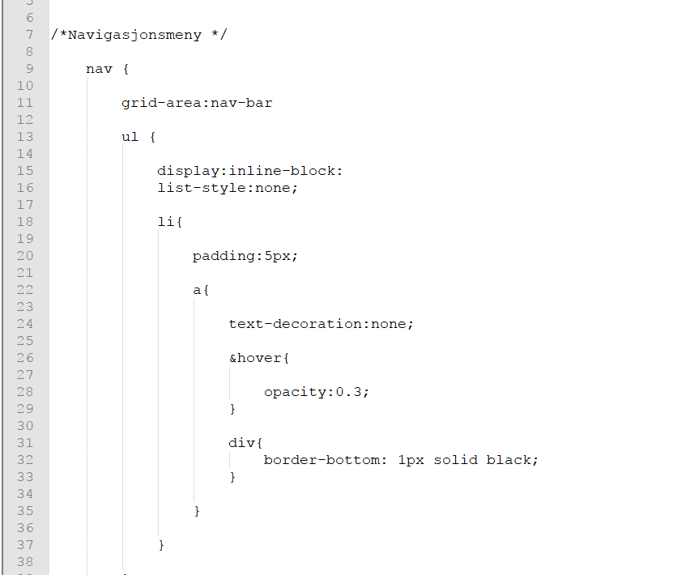

SASS
SASS - "Syntactically Awesome Style Sheets". CSS, men raskere, og enklere! (I flere betydninger) CSS har flere problemer: mange av de samme tingene gjøres om igjen og om igjen, CSS-filene kan bli lange og føre til at siden kjører sakte, vi kan ha mange CSS-stilark, CSS bruker ikke variabler for komplekse uttrykk (Noe som for eksempel kan bli vanskelig ved f.eks unicode-farger) og CSS bruker ikke innrykk for å vise at noe hører sammen. SASS er ambisiøst og ønsker å fikse alle disse problemene ved at man kan lage et scss (Sassy-CSS)-dokument i en editor på samme måte som andre dokumenter. SCSS minner om CSS i syntaks på mange måter, men for å bli lesbart for nettleste må dette kompileres om til et CSS-dokument. Dette kan enten gjøres vha. kommandolinjen eller ved bruk av en GuI. På dettte nettstedet og i dette eksempelet har jeg brukt Scout-App.
Komme i gang med SASS
For å komme i gang med SASS må vi først installere Ruby og SASS. Dette kan gjøres vha. kommandolinja i Windows.
Syntaks
Variabler
En variabel lages vha $variabelnavn. Hver gang vi ønsker å bruke variabelen, skriver vi bare $variabelnavn .
Dette kan f.eks være praktisk med komplekse navn, slik som fargenavn i hex.
Nøsting
Nøsting/nesting gjøres ved å sette klammer slik som vi gjør i javascript. Dette betyr at elementene hører til under denne seksjonen, og sparer oss ifra å gjenta kode. Vi kan enten bruke innrykk eller la være å bruke dette. Personlig er innrykk foretrukket ettersom det får koden til å minne mer om andre språk, men også for å holde det mer ryddig.
Hypotetisk strukturering
Her er hvordan jeg ville ha strukturert de ulike elementene sånn noenlunde om jeg hadde brukt SASS. Her brukes menyen som et eksempel, siden det gjerne er her man bruker flest elementer, med pseudotagger for lenker, lister etc.

Mixins
Mixins kan sammenliknes med en funksjon i et vanlig programmeringsspråk, vi definerer en innverdi og en funksjon, og bruker fra nå av funksjonen til alt vi ønsker å gjøre med de ulike innparametrene. Dette kan være praktisk både med tanke på debugging og ved å begrense antall linjer med kode.
Praktisk eksempel for komprimering
Jeg kom ikke i gang med SASS før jeg allerede var nesten ferdig med kodingen av både CSS-filen og HTML-dokumentene. Følgelig er ikke CSS-filen skrevet vha SASS. I dette tilfellet er derfor bruk av SASS begrenset til komprimering. Komprimering vil gjøre at filen kjører raskere enn ellers.
Det første bildet viser stilarket for dette dokumentet før behandling med Scout. For å komme i gang med dette må vi bytte ut filnavnet med .SCSS
{kind=link}
Det andre bildet viser resultatet for stilarket etter at det har blitt behandlet med Scout. Som vi klart kan se: dette dokumentet er tilnærmet uleselig for mennesker, men vil kjøre mye raskere i en nettleser grunnet at størrelsen på dette er færre byte. Vi kan forøvrig velge innstilling på hvor komprimert dette skal være, dog det vanligste vil være å la det være så kompakt som mulig med færrest mulig mellomrom.
{kind=link}